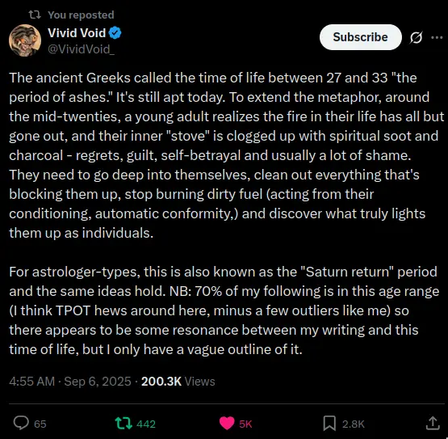
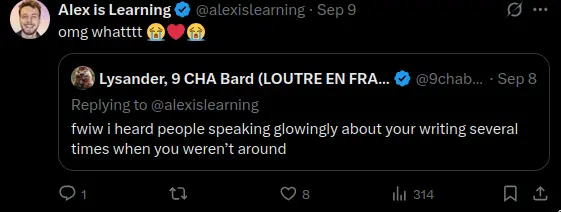
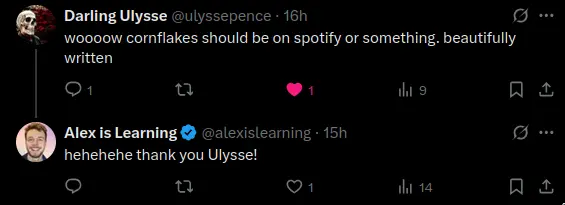
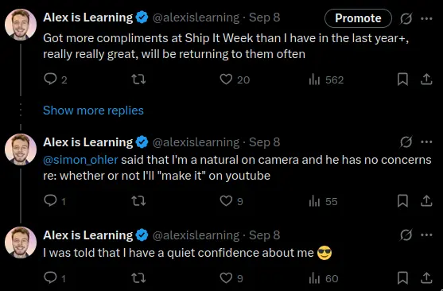
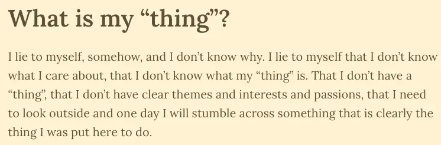
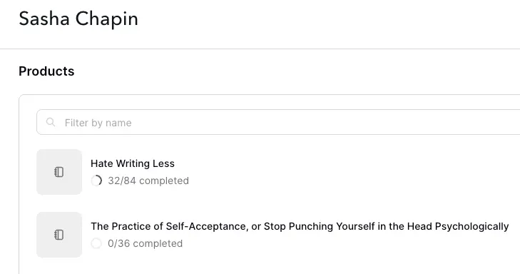
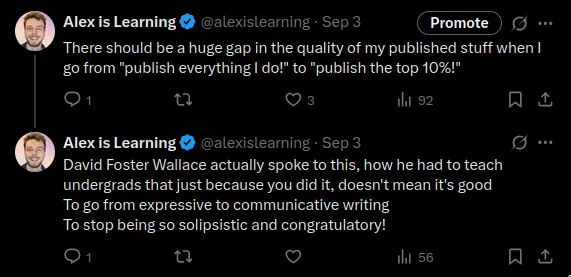
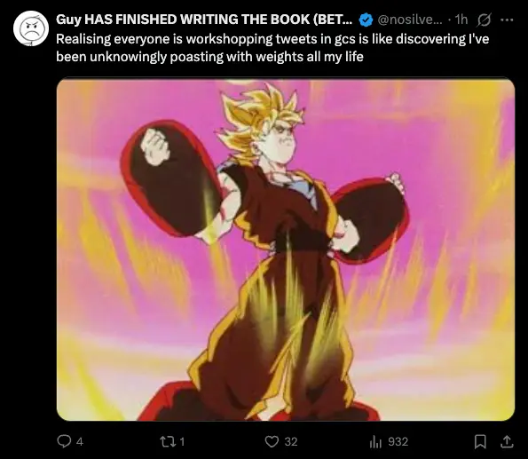

- Creating things (parent page)
- Wed 2025-09-10
- See also What could the Alexnaissance look like? from 25th Aug 2025
- I emailed Sasha on Saturday (it’s Wednesday now)
- Basically saying “I think I’m a good writer, but I think I could get much smarter about it, what do”
- He replied today saying that he doesn’t really do writing coaching any more but that if I have any specific questions
1. What do I want from Sasha?
What I’m really looking for is like… high-level holistic creative advice
- (And I might be able to solve this myself, I think even just writing this up has helped a lot!)
- I want to make youtube videos + substack posts + songs
- I want to make a living from this - even if only scraping by
- I had a good slowly growing youtube presence during the 3 months I made videos (0-440 subscribers)
- I’m kind of stuck in lowbie hell on twitter (and substack) and I’m not sure what to do differently
I might be able to solve it myself
- I think I’ll be able to look at what Sasha does, then look at what I do, and connect the dots, lol
- Like, there will be low-hanging fruit here.
- Could be that he reads this, is like “yep, try doing that stuff for 3 months”, and then I check in again in a month…
Dream → he checks out some of my stuff and gives bespoke advice
- “Sasha checks out Alex’s web presence and gives opinionated advice”
- But even just to skim some stuff would be super useful too
- “Yeah the main problems with your substack presence are x y and z”
- “Yeah this substack post was solid but if you did x y and z then it'd be way better”
- “Yeah the main problems with your twitter presence are x y and z”
- “Yeah the main problems with your youtube presence…“? Have a sense that this is less important, I already have a good idea of this, and the hardest part (“be comfortable and likeable on camera”) is already solved
Setting the stage - where I’m at
- Sasha has 25,000 substack followers, I have 64
- Sasha has 38,000 twitter followers, I have 236
- (I used to have ~750 until my old account got suspended because they thought I was a bot)
- I have 414 youtube subscribers
- Was steadily growing in the 3 months I made videos, then had an 8 month hiatus
- I made youtube videos for 3 months, Nov 2024 -Jan 2025
- Youtube comments → proof of concept, I had a video that got 5k views in a few days and a bunch of lovely comments (the video)
- Era 1 of making music and youtube videos
- Was steadily growing in the 3 months I made videos, then had an 8 month hiatus
- I’ve been writing loads on this website - more words than The Great Gatsby (not a long book, but still!) since I set it up in ~July
- I’m 29. It’s Sep 2025. I had a Kensho experience in Feb 2024 and shit has been wildly different ever since (no social anxiety, total ease being on camera, lessened sense of self, etc).
- I have key themes, mainly around the journey from traumatised family to grokking some tpot wisdom, kensho, then gradually expanding my agency and leaning into what I really want to do

- I can no longer make money in my old ways (e.g., startup internal operations). I have £15k in the bank. I’ve just spent 4 months applying for Effective Altruist jobs only to realise that actually I really don’t want to do that. I’m really dumb in lots of ways
I’m good at this stuff!
I’m good at writing!
-
- 👆 after he read my vignettes and the substack posts I wrote whilst at Ship It Week

- I’ve gotten really good feedback on my vignettes and substack posts and youtube videos and even some of my shitty songs.
- Best vignettes are 01. To be a boomer and 06. Cornflakes and 07. Travel day

- There’s an artistic spark in me that I’ve been too scared to cultivate; no support system, traumatised parents, english culture, low agency until last few years, etc
I’m good on camera!

- 👆 twitter thread here
🚨There’s clearly a huge amount of energy here!
- I’ve made 50+ youtube videos in a very flow-state-y alive way
- I’ve really really enjoyed writing my vignettes, loved reading them back
- I really quite like my youtube videos
- I’m not like, a tortured artist who is really struggling to down and make stuff
- So, I think there’s lot of good stuff here, and now it’s just a case of harnessing this energy in a “smarter” way
I want to get serious about this, full time, Death Ground
-
It is time for me to accept that I can't make money via my old ways → I just tried doing internal operations contracting for a startup and mannnnn was it grindy
-
I’ve pretended that I don’t know what my “thing” is, but really, I want to create things, I want to be an artist, I want to share my experience
-

-
I’d now rather be a starving artist than have savings but not be in flow (?). I’ve been afraid to run out of money
-
I have ~6 months of runway and want to work on this stuff full time
2. What are my specific questions?
- Note → maybe I should do The Course
- The thing is → I don’t hate writing, I really enjoy it!!! It’s very alive for me right now!!!

- It is almost certainly a good idea to do The Course
Q1. The meta question is just “what am I doing ‘wrong’”, or, “what does it look like to do it right”
- How do I know I’m doing something wrong?
- My substack has steadily grown despite me being very inconsistent with it. It could be that it’s good enough already and I just need to be consistent. But I don’t think this is the case, for reasons I’ll discuss below
- I have some hunches here, like writing too much for me and not enough for others
- I’ll go into this in more detail below
Q2. How to go from “friends like it” to “more people like it”
- (This might be essentially the same as the meta question, just reworded)
- Currently on Substack, I'll write something in one go, and it’s good in a scrappy way, and it describes my current lived experience
- But like, this isn’t what Sasha does
- What does he do?
- Notes Against Note-Taking Systems
- Concisely articulates a strong opinion that goes against the grain and provides a new framing against second-brain systems
- 10x happiness increases are possible, and this is an underrated fact
- As with his deep okayness post → shows people how much better things can be
- Talking Enneagram 7 blues
- Vivid writeup of being a type of guy. I shared this was an enneagram 7 friend and she was incredibly grateful to me for sharing it, so yeah, very potent
- What maximum productivity looks like for me
- Similar to “notes against note-taking systems” in that it describes a different way of being that is “healthier” than the zeitgeist
- Notes Against Note-Taking Systems
Solution 1 - only publish things that are ~essential

- I publish ~everything I write, because I’m genuinely thrilled to have made something
- I was a STEM guy for years despite secretly never giving a shit about science, I was socially anxious as fuck for years etc, and now I’m just like, really thrilled to be here, and thrilled to share things
- Scrolling through Sasha’s posts, it’s like “holy shit, that one rules, and that one, and that one, and I really want to getting round to reading that one”, etc, etc
- So there’s a feeling of essential-ness - only publishing the stuff that is really good and essential
- This is probably also the case for tweets too - having a more strict quality filter
Solution 2 - provide value to non-friends
- I think I kinda solved this problem for Youtube, but not for Substack
- On Youtube, I inspired other wannabe creatives - “hey, here I am attempting to make music, I’m shit at it but I’m having fun!” - got lots of comments about being inspiring
- See What could the Alexnaissance look like? for one screenshot example
- On Youtube, I inspired other wannabe creatives - “hey, here I am attempting to make music, I’m shit at it but I’m having fun!” - got lots of comments about being inspiring
- How to provide value to non-friends
- I think the answer might be… ”provide value, whether that be inspiration, or new ideas, etc”
- Sasha posts about ways of being (peak productivity, how to write), possibility space-expanding stuff (10x happiness increases are possible)
- I think the answer might be… ”provide value, whether that be inspiration, or new ideas, etc”
- Vs, providing value mostly just to me
- E.g., me writing about how I’m angry (newest post) → friends are like “hell yeah!”, but anyone who doesn’t know me won’t read it
- It’s not essential
- It’s like the Mom Test
- “‘The mom’ in The Mom Test represents a figure who, out of love and a desire to be supportive, will likely give you encouraging but ultimately unhelpful and biased feedback on your business idea.”
- I think my friends aren’t lying when they say my writing is good, but I think they have a skewed idea of how much non-friends would like it.
- E.g. my friend Simmo was like “if you write a substack a day for a year, there’s no chance that you wouldn’t be successful” which I did not believe at all. I guess in a year I’d have time to find the correct approach…
Solution 3 - write about a specific topic, and work on it for a few days+
- What I currently do:
- As I write it in one go, publishing a few hours after starting, the title comes to me at the end, is retro-fitted on, and doesn’t fully describe the writing - the writing isn’t this cohesive thing, usually, it’s more the various things that have been alive for me
- So, could one solution be to work for multiple days on a thing that already has the title in place
- Example post titles of mine:
- “Becoming angry”
- I arrived at this title, and at becoming angry, like 33% of the way through, it starts as more of a Ship It Week retrospective
- The OG title was “Wednesday at Ship It Week”, which ofc is not very engaging, lol
- “I know what ‘my thing’ is”
- Another retro-fitted title, at first this was just called “Ship It Week”
- There’s an impulse in me to share everything that is going on, or at least to set the scene, and I suspect that it might be the “finding yourself way more interesting than most other people will” thing that DFW talks about (Expressive Mode vs Communicative Mode)
- “On being “in-group”: tpot vs EA”
- This one is scrappy (as they all are, but this one feels more so) - can imagine I could have sweated over this quite a bit more and made it more coherent
- “I got suspended from Twitter and it hurts which is good”
- Good in a first-draft, “interesting to friends” way
- “Becoming angry”
Solution 4 - how to discover a good title & topic?
- This can happen my typical way, free-writing a first draft, and seeing what emerges
- From Sasha’s “Notes Against Note-Taking Systems”
“Most heart-stopping writing comes from synthesizing the previously unarticulated in the moment. Rather than reaching for your database, try channeling what’s in the air at this very second. If it’s some stunted, fragmentary version of an idea you were exposed to previously, that is good. These read/write errors are what we call originality.”
- My “problem”1 has been that I’ve been so pleased with myself for writing a good first draft that I publish that first draft after a bit of polishing
Solution 5 - how to work on things for multiple days?
- It feels very good and alive to write and publish something in one session, with some polish
- But, I do feel that I've convinced myself here that that approach won’t work for getting non-friends to care
- So, I think it’s just a case of making a Google Doc for a post, and refining it over multiple days, and even sending it to friends for thorough feedback
- Only publishing that which is essential
Blockers
Impulse to share everything
- An impulse to share everything
- There’s an impulse in me to share everything that is going on, or at least to set the scene, and I suspect that it might be the “finding yourself way more interesting than most other people will” thing that DFW talks about (Expressive Mode vs Communicative Mode)
- In a way I am very impressed by myself, a real “pinch yourself” quality to how much better things are now, how much I’ve grown, etc. Combine this with the enneagram 3 desire for approval, the enneagram 3 tendency towards vanity, and the “I didn’t make anything for years and years, this is new to me, I want to share it all”, and you have someone who shares every first draft because they’re so thrilled with themselves for breaking the working class generational trauma mould and making something
Sasha’s reply
- He read this page and my most recent substack and said that there’s a simple issue he spots in my work → the amount of throat-clearing I do
- This resonates hard!
- 👇 Sent this voice note to a friend re: throat-clearing
What does ChatGPT say?
- Trying out GPT5 for the first time - gave it this post + some writing samples
Appendix
I should also get better at tweeting
- Just saw this

- 👆 https://x.com/nosilverv/status/1965837016161251446
Footnotes
-
I don’t think this has been an actual problem, more part of my creative journey. Good for me! ↩